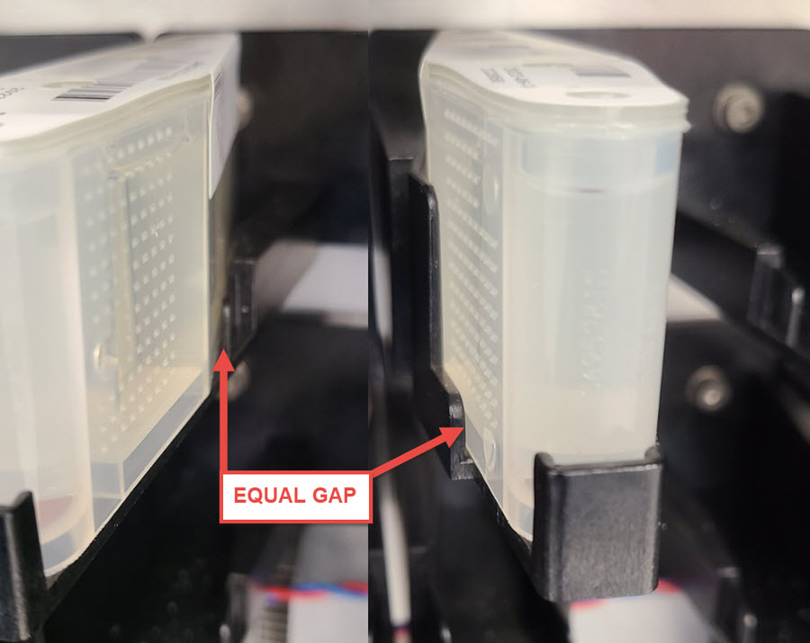
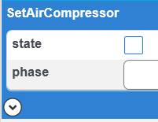
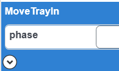
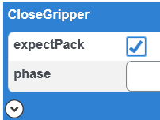
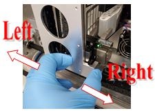
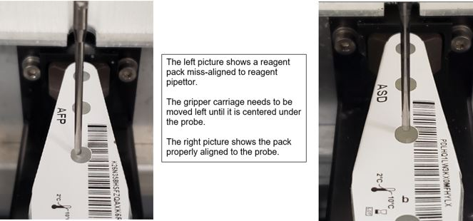

This topic includes information about how to adjust and align the reagent gripper in the reagent storage module (RSM).
Prerequisites
Before you begin an alignment procedure:
If you must make changes to the instrument's hardware, you must complete those changes before you prepare the instrument for adjustments and alignments.
You must confirm that alignments have previously been completed on the instrument. To confirm, in the Machine Control App go to
Menu > Prototype Alignment to open the Prototype Alignment page and to verify the
Finalize Instrument Alignments button is
GRAY in color. If the button is
BLUE in color, do not complete this procedure. Instead, you must first complete manual alignments.
You must first initialize the instrument to a
GREEN (Ready) status to ensure all subsystems have been successfully initialized and homed. You must then enter the instrument into a
BLUE (Maintenance) status.
Unload In-Use Reagent Packs
If you open reagent storage for any extended period of time, such as during alignments, unload in-use reagent packs and place them into an external refrigerator to prevent compromising reagent pack stability.
Start a Service Session
Before you open covers and start alignments, start a service session to allow the compressor to continue operating as needed while the gripper is toggled open and closed.
In the Console App go to
MENU > Tools > Diagnostics > Service Diagnostics.
Select the
SYSTEM RUNNING button and go to
Stop > Pause to enter the instrument into a
YELLOW (Paused) status.
Select
Start Session to enter the system into a
BLUE (Maintenance) status.
To gain access to the interior, open the sample presentation unit (SPU) and remove the reagent storage front cover. You may need to bypass the reagent storage cover switch with tape or something similar to allow for the movement of devices while the covers have been removed.
Note: If the instrument enters into a
RED (Stopped) status:
Verify the interlock switch is in the correct position.
Be sure you are signed in to use the BeckmanAdmin account.
In the Console App go to
Menu > Tools > Diagnostics > Intrusive Diagnostics and select
Start Session.
Complete all troubleshooting, adjustments, manual alignments, and maintenance necessary to be able to initialize the instrument to a
GREEN (Ready) status.
Select the
SYSTEM RUNNING button and go to
Stop > Pause to enter the instrument into a
YELLOW (Paused) status.
Best Practices
When you perform reagent gripper alignments, follow these best practices:
Packs should rest on the bottom of the nest without deflecting the nest downward.
Packs should be completely centered in the nest being aligned. For storage nests and the onload tray, there should be equal clearance between the pack and each side of the nest being aligned to.

While checking alignments, you can use the Machine Control App to toggle the gripper open and closed. When you have achieved optimal alignment, you should observe little or no reagent pack movement during the gripper open and closed actions.
If the instrument is in a
RED (Stopped) status, the system will not automatically trigger the compressor to cycle. You may need to use the Machine Control App to enable the compressor and to build adequate pressure. See
Turning the Compressor On and Off for more information.
Turning the Compressor On and Off
Perform this procedure to turn the compressor on and off, if necessary.
In the Machine Control App go to
MENU > Machine Control > Chassis > Chassis.Assembly > Chassis.Pneumatics.
On the Action tab select
SetAirCompressor

.
To turn on the compressor, select
state. Select
Execute.
To turn off the compressor, clear
state. Select
Execute.
Reagent Storage Reference Positions
The following illustration displays the reagent storage reference positions that the gripper aligns to.
Figure 307: Reagent Storage Reference Positions
P1 - P4
Pipettor positions 1 - 4
T1
Tray 1 position
N37
Nest 37 position
N50
Nest 50 position
1
Gripper home position
Aligning the Reagent Gripper
Perform this procedure to align the reagent gripper to specific reagent storage reference positions. The system software calculates all other nest positions.
Note: If you find an individual nest position to be out of alignment, see
Aligning Individual Reagent Nests for more information about how to adjust the specific nest offset.
Caution: DO NOT select
Move To Position on the alignment screen during this procedure, because the reagent gripper may crash into reagent packs and/or nests and may cause damage to the reagents or to hardware components.
In the Console App go to
Menu > Tools > Diagnostics > Intrusive Diagnostics and select
Start Session.
In the Machine Control App go to
MENU > Machine Control > ReagentLoader > ReagentLoader.Assembly.
On the Action tab select
MoveTrayIn.

Select
Execute. The reagent load tray should move to the left and should be accessible from inside reagent storage.
Go to
MENU > Prototype Alignment to open the Prototype Alignment page.
Go to
Reagent Storage > Nest 37 Position.
Select
Disable All.
Manually move the reagent gripper to the home position (to the bottom left corner of reagent storage) if it is not already located there.
Important: You must manually move the reagent gripper to the home position to prevent the gripper from crashing into a nest.
Select
Home All. Verify that the gripper now rests at the home position and that there are no error messages.
Place a reagent pack in Nest 37.
Select
Disable All. Manually move the reagent gripper to Nest 37 Position so that the jaws will engage the pack when closed. See
Reagent Storage Reference Positions for more information.
On the Machine Control page go to
ReagentStorage > ReagentStorage.Assembly.
On the Action tab select
CloseGripper.

Select
expectPack.
Select
Execute.
Verify the gripper has a good grip on the pack.
Note: If the gripper fails to grip the pack and an error occurs, the system may not have sufficient pneumatic pressure. Manually cycle the compressor to build pressure and repeat the action. See
Turning the Compressor On and Off for more information.
Align the reagent pack within the nest position while it is in the gripper jaws.
Manually move the gripper down so that the reagent pack just touches the surface of the nest.
Be sure the nest is not being deflected downward.
On the Prototype Alignment page, select
Refresh to display the value for the
Last Known Position for the Nest37.ZPosition. Type the value into the
Alignment Value box for Nest37.ZPosition.
Important: Keep a record of the Nest37.ZPosition value for when you align Nest 50 later in this procedure.
Move the gripper carriage to the left until the pack touches side of the nest. Select
Refresh to display the value for the
Last Known Position for the Nest37.XPosition. Keep a record of the Nest37.XPosition (left) value.

Move the gripper carriage to the right until the pack touches side of the nest. Select
Refresh to display the value for the
Last Known Position for the Nest37.XPosition. Keep a record of the Nest37.XPosition (right) value.
Add the values for Nest37.XPosition (left) and Nest37.XPosition (right) and divide the sum by 2. Type the result, without decimal places, into the
Alignment Value box for Nest37.XPosition. This will center the pack in the nest position.
Select
Save All.
Align the gripper to Nest 50 Position.
On the Prototype Alignment page go to
Nest 50 Position.
Manually move the gripper to Nest 50 and push the gripper down so it lightly touches the top of the nest. See
Reagent Storage Reference Positions for more information.
Type the value that you recorded for the Nest37.ZPosition into the
Alignment Value box for Nest50.ZPosition.
Move the gripper carriage to the left until the pack touches side of the nest. Select
Refresh to display the value for the
Last Known Position for the Nest50.XPosition. Keep a record of the Nest50.XPosition (left) value.
Move the gripper carriage to the right until the pack touches side of the nest. Select
Refresh to display the value for the
Last Known Position for the Nest50.XPosition. Keep a record of the Nest50.XPosition (right) value.
Add the values for Nest50.XPosition (left) and Nest50.XPosition (right) and divide the sum by 2. Type the result, without decimal places, into the
Alignment Value box for Nest50.XPosition. This will center the pack in the nest position.
Select
Save All.
Align the gripper to Tray 1 Position.
On the Prototype Alignment page go to
Tray 1 Position.
Manually move the gripper to Tray 1 Position and push the gripper down so it lightly touches the top of the nest. See
Reagent Storage Reference Positions for more information.
Select
Refresh to display the value for the
Last Known Position for the Tray1.ZPosition. Type the value into the
Alignment Value box for Tray1.ZPosition.
Move the gripper carriage to the left until the pack touches side of the nest. Select
Refresh to display the value for the
Last Known Position for the Tray1.XPosition. Keep a record of the Tray1.XPosition (left) value.
Move the gripper carriage to the right until the pack touches side of the nest. Select
Refresh to display the value for the
Last Known Position for the Tray1.XPosition. Keep a record of the Tray1.XPosition (right) value.
Add the values for Tray1.XPosition (left) and Tray1.XPosition (right) and divide the sum by 2. Type the result, without decimal places, into the
Alignment Value box for Tray1.XPosition. This will center the pack in the nest position.
Select
Save All.
Align the gripper to the pipetting positions.
On the Prototype Alignment page go to
Pipettor 1 Position.
Manually move the gripper to Pipettor 1 Position and push the gripper down so it lightly touches the top of the nest. See
Reagent Storage Reference Positions for more information.
Select
Refresh to display the value for the
Last Known Position for the Pipettor1.ZPosition. Type the value into the
Alignment Value box for Pipettor1.ZPosition.
Select
Disable All.
Move the pipettor over one of the wells of the reagent pack.
Move the pack left and right until the well is centered under the pipettor probe.

Select
Refresh to display the value for the
Last Known Position for the Pipettor1.XPosition. Type the value into the
Alignment Value box for Pipettor1.XPosition.
Select
Save All.
Select
Enable All.
Select
Home All.
Repeat these steps for pipettor positions 2-4.
Remove the reagent pack used for alignments.
To ensure the subsystem initializes successfully, manually home the reagent gripper again before replacing reagent storage covers.
Ending an Adjustments and Alignments Session
In the Console App go to
Menu > Tools > Diagnostics > Intrusive Diagnostics.

 to display the value for the
Last Known Position for the Nest37.ZPosition. Type the value into the
Alignment Value box for Nest37.ZPosition.
Important: Keep a record of the Nest37.ZPosition value for when you align Nest 50 later in this procedure.
to display the value for the
Last Known Position for the Nest37.ZPosition. Type the value into the
Alignment Value box for Nest37.ZPosition.
Important: Keep a record of the Nest37.ZPosition value for when you align Nest 50 later in this procedure.